6.服务与网络
1. 服务（Service）¶
Service 和 Route
The **Service** will expose your application internally within the cluster, and the **Route** will create a publicly accessible URL for external access.
Kubernetes中的每个Pod都有它自己的IP地址，但Pod经常会因为各种原因而挂掉，如果我们用Pod的IP地址来访问该Pod，会常出现IP地址无效的情况，我们用 服务（Service） 解决这个问题。服务提供了稳定的IP地址，我们永远可以找到服务的IP地址，然后通过该服务访问到想要找的应用Pod。
Note
- Service的端口（
port）是任意的，而Service指向的Pod的端口（targetPort）必须是Pod本身的端口（是Pod而不是Container！因为Pod中的所有Container是共享网络的，所以用同一个Pod端口） - 一个Service可以开放多个端口，用于与不同的App进行沟通，但要注意的是，如果有多个端口开放，那么Service的每个端口都必须有一个名称
服务支持应用程序 内/外（Internal/External Networking） 的各种组件之间的通信。假设我们有一个前端的Pod，一个后端的Pod，以及一个数据库。他们之间的内部沟通正是由服务实现的（Internal Networking）。
服务的端点（Endpoint）
在创建Service的时候，k8s也会创建一个同名的Endpoint，这个Endpoint将跟踪哪些 Pod 是Service的端点，起到了一个实时数据存储的作用。
端点（Endpoint）是服务（Service）的一组网络地址。 创建服务时，k8s自动为Service生成Endpoint。 端点表示服务所针对的 Pod 的实际 IP 地址和端口。当创建、删除或替换 Pod 时， 服务的端点由 Kubernetes API 服务器动态更新。
可用k describe svc <ServiceName> | grep -i endpoint查看端点:
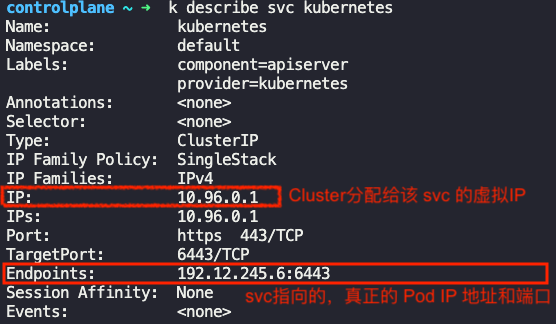
集群上的IP地址¶
IP地址格式¶
IP address由两个部分组成：网络地址（Network ID） 和 主机地址（Host ID）。拿192.168.1.10举例：
- 网络地址 是前三个数：
192.168.1，显示了当前所在的网络地址 - 主机地址 是最后一个数：
10，显示当前网络中，主机的编号
Note
当你使用VPN（Virtual Private Network）的时候，你的 网络地址 是被隐藏的
IP地址类型¶
有两种类型：外部IP地址（external/public） 和 内部IP地址（internal/private）。一般来说，每个设备都有自己的 外部IP 和 内部IP，且一般两者不同。
- 外部IP：由你的网络供应商提供，你访问一个网页时（比如百度），百度可以看到你的外部IP地址，知道你是从哪儿来的。
可用curl ifconfig.me查看（ifconfig=InterFace config） - 内部IP：是自动生成的。人如其名，只做内部使用。比如，用于在家庭网络中识别你的身份信息。
可用ipconfig getifaddr en0查看（ipconfig=Internet Protocol configuration）
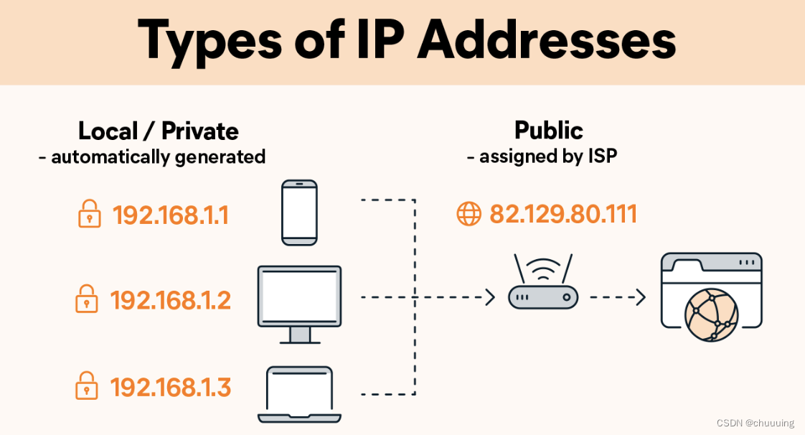
服务类型：¶
| Service类型 | 功能 |
|---|---|
NodePort |
用于承接来自 外部 的访问，比如用户访问。 该服务监听了Node的端口（Port）， 并将 在端口收到的请求 转发给某个Pod的端口 |
ClusterIP （默认类型） |
用于 Cluster内部 的交流（Internal Networking）。 该服务在集群内部创建一个虚拟 IP， 以实现不同服务之间的通信， 例如前端服务器和后端服务器之间的通信。 |
Headless |
帮助访问某个特定的Pod |
LoadBalancer |
该服务是负载均衡器，比如在用户访问量激增时，为Web 服务器分配负载 |
（1）NodePort类¶
从NodePort 服务的角度看，有三个端口：
TargetPort：Pod的端口，可选。如不写明，默认与Port值相同Port：服务本身的端口，必须写明，否则会报错。NodePort：Node的端口，可选。如不写明，k8s会提供任意一个在 [30000, 32767] 范围内可用的端口
Note
这三种Port的名字就是以 服务 自身为出发点设计的：
- 服务自己的Port就叫
Port - （可选）Pod的端口是服务想要访问的目标，所以叫
TargetPort； - （可选）Node的Port叫
NodePort，对 外部访问 可见，所有外部访问都从这里进
比较¶
| 服务不存在 | 有了服务之后 |
|---|---|
| 为了更好的理解，我们看一下如果 服务不存在 ，用户可以怎么访问Pod中的应用： 方法一： 如果用户本身在Cluster内部，可以直接通过 curl http:10.244.0.2访问应用方法二： 如果在Cluster外部，可以通过 ssh 来访问 curl http:10.244.0.2 |
有了服务之后，Cluster外部对应用的访问会更方便。服务（Service）相当于一个虚拟服务器，有自己的IP地址（这里是10.106.127.123）。这里我们不再需要 ssh ，而是直接访问Node所在的ip地址 192.168.1.2（⚠️用户本身的电脑IP和Node的IP是在同一个网络里面的，即IP地址中的前三部分时相同的，所以我们才能直接访问到Node得IP），入口则使用Service提供的端口（ 30080），比如使用curl 192.168.1.2:30080 |
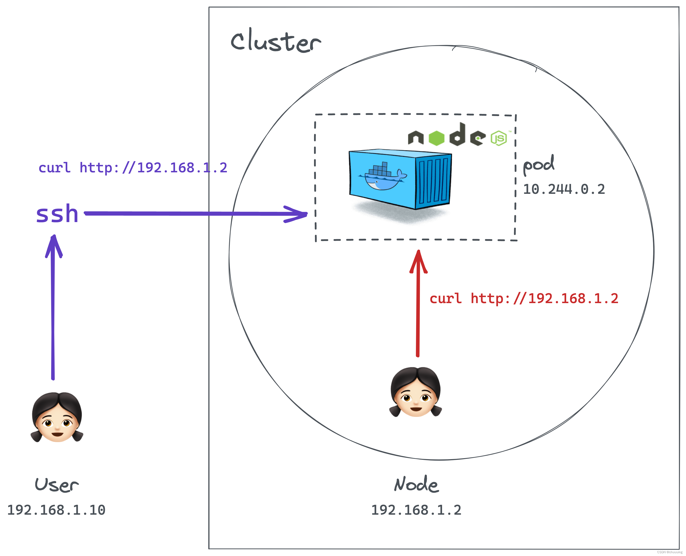 |
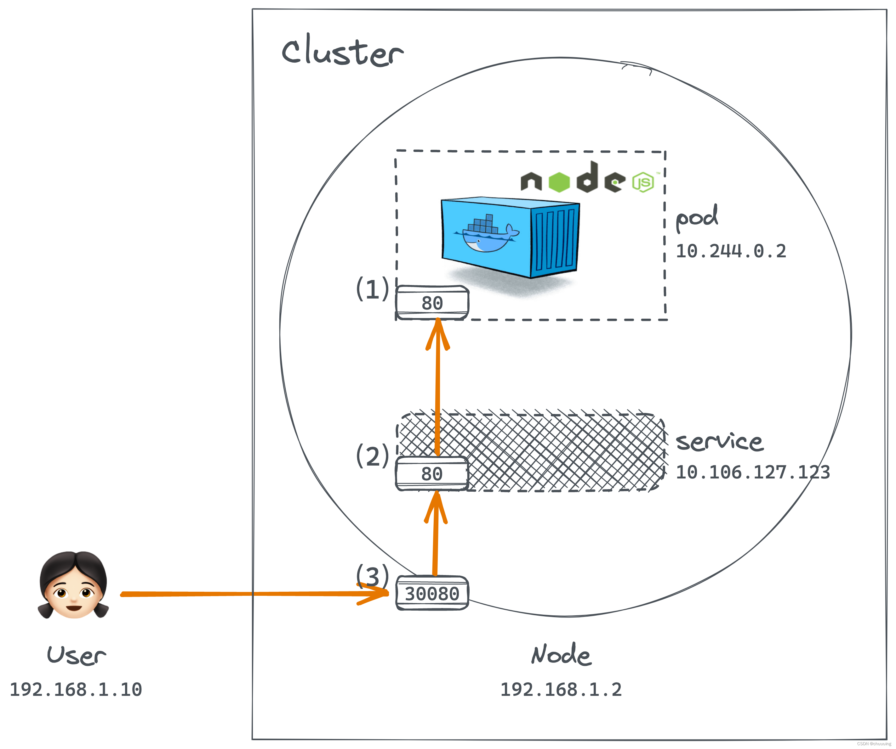 (1) TargetPort (2) Port (3) NodePort |
举例¶
# my_service.yaml
apiVersion: v1
kind: Service
metadata:
name: myapp-service
spec:
type: NodePort # Service的类型
ports:
- targetPort: 80
port: 80
nodePort: 30008
selector: # selector用于指定该服务要访问的Pod
app: myapp
function: frontend
Note
.spec.ports
容纳的是一个数组，意味着，在一个服务中，是可以多个这样的映射的（NodePort->Port->TargetPort）
Note
.spec.selector
指定targetPort属于哪一个Pod，上面例子中绑定了一个labels中有app=myapp和function=frontend的Pod。
很多情况下，一个前端App会有多个replicas，但因为他们都有相同的labels，他们会自动被service找到！
查看服务：
k get services
# 或
k get svc
NAME TYPE CLUSTER-IP EXTERNAL-IP PORT(S) AGE
kubernetes ClusterIP 10.43.0.1 <None> 443/TCP 7m30s
myapp-service NodePort 10.106.127.123 <None> 80:30008/TCP 30s
- PORT(S)中代表的是：
<Port><NodePort>/<Protocol> - 其中的
kubernetes服务是k8s在启动时创建的默认服务。myapp-service服务是我们创建的，现在作为用户可以通过curl http://192.168.1.2:30008直接访问到前端App了！
多Node¶
当Pod的replicas分布在不同的Node上时，Service会自动扩展到多个Node上，我们不需要做任何多余的操作。
curl http://192.168.1.2:30008
curl http://192.168.1.3:30008
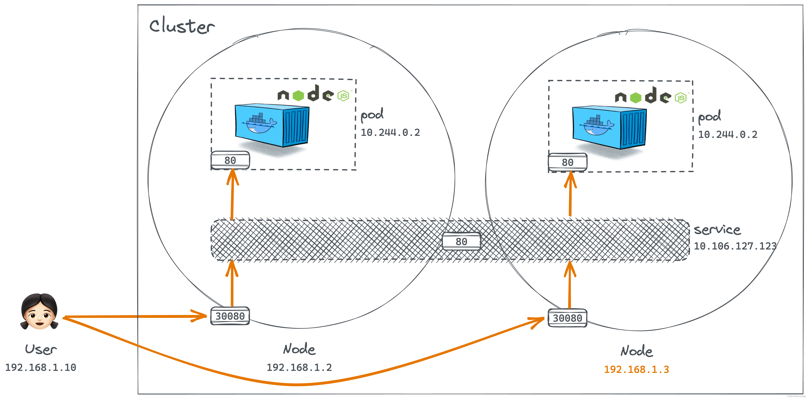
（2）ClusterIP类 服务¶
假设现在有前端后端组成的程序，而前端和后端各有自己的Replicas（复制品，为了处理较大的用户访问而存在）。访问前端1的时候，前端1的API是发送给后端的哪一个replica的呢？
Kubernetes的ClusterIP服务可以帮助我们将 Pod 分组在一起（所有的前端replicas为一组，后端replicas为另一组），并提供单个接口（即Service）来访问组中的 Pod。Pod会因为各种bug生生死死，每次重生之后拿到的IP地址还不一样，所以我们没有办法直接用Pod，因为我们不知道该去哪个IP地址找，而Service提供了稳定的IP地址。如图：
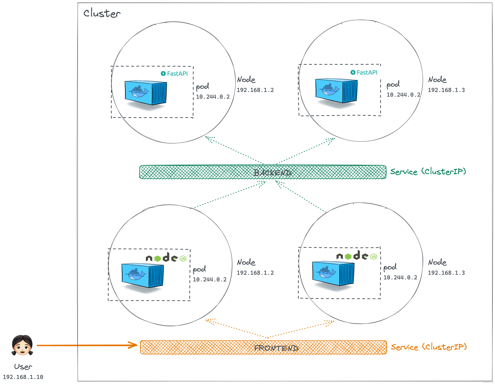
（3）Headless类¶
当我们想要访问指定的Pod时，可以用Headless服务。当我们定义Headless服务，将.spec.clusterIP设置为None即可，如图：
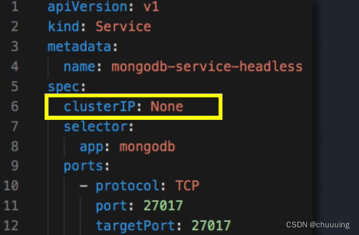
（4）LoadBalancer类¶
LoadBalancer类Service = NodePort类Service + 发送一个 添加负载均衡器（Load Balancer） 的请求
创建服务（service）的三种方法¶
# 方法一：用yaml文件定义
k create -f my_service.yaml
# 方法二：生成service
# - port:TargetPort=8080:8080
# - 需要手动往YAML中修改`.spec.selector`
# - 自动生成了`.spec.ports.name`
k create service nodeport [ServiceName] \
--tcp=8080:8080 \
--dry-run=client \
-o yaml > service.yaml
# 方法三：暴露deployment（以生成service）
# - 需要手动往YAML中添加`.metadata.labels`
k expose deployment/[DeploymentName] \
--name=[ServiceName] \
--port=8080 \
--target-port=8080 \
--type=NodePort \
--dry-run=client -o yaml > service.yaml
2. Ingress¶
背景¶
🤔 当App在本地服务器上时，如何实现用域名 http://www.my-shop.com访问到192.168.1.2:30008 呢？
- -> NodePort类的Service暴露 Node端口 30080
- -> 192.168.1.2:30008
- -> 配置DNS服务器
- -> http://www.my-shop.com:30080
- -> 添加代理服务器 / Proxy Server
- -> http://www.my-shop.com
- -> Done!
🤔 当App在云服务器上时（比如Google Cloud Platform），如何实现呢？
- ->
LoadBalancer类的Service，不仅拥有NodePort类的功能，还向云服务器发送了一个 添加负载均衡器(LoadBalancer) 的请求 - -> 云服务器自动配置一个负载均衡器（⚠️ 负载均衡器 的价格是按“个”计算的！）
- -> 该负载均衡器会发布一个可供外部访问的IP（我们叫他
LoadBalancerIP） - -> 配置DNS服务器，指向
LoadBalancerIP - ->
http://www.my-shop.com
⚠️负载均衡器 可嵌套，比如对一个主域名下的子域名进行配置：
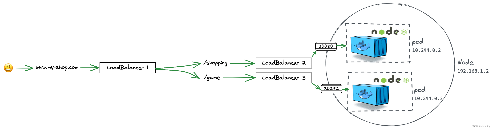
这些步骤都完成以后，配置SSL以使用https（而不是http）。对SSL的配置可以在多个位置实现：
- App本身层面
- 负载均衡器层面
- 代理服务器层面
上述三种配置方法，均可实现同样的功能。
救星Ingress¶
各种各样的配置，你的头现在多大了呢？Ingress就是用来帮忙解决这个令人头疼的问题的！它包括但不限于路由（包括引流到不同App，比如/shopping 和/game）和SSL配置。
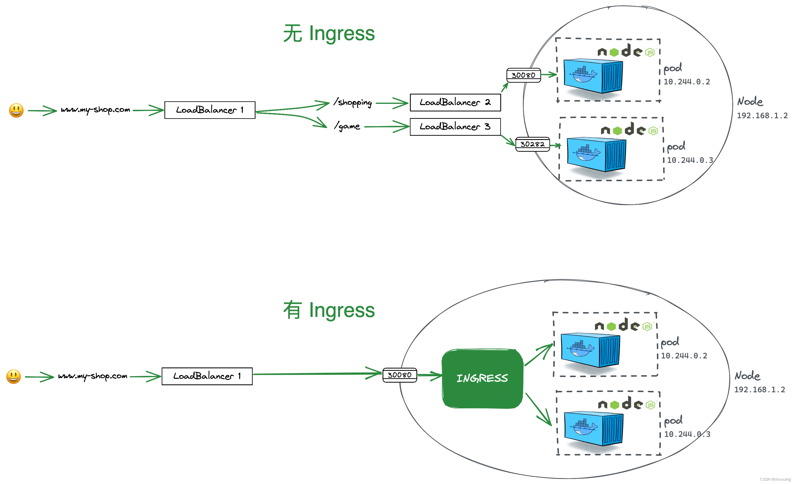
Ingress是什么¶
把Ingress分为两个组件：Ingress Controller和Ingress Resource。一般两者分别在不同的namespace中，特别是Ingress Controller，做为与应用无关的资源，应该被放到单独的Namespace中！
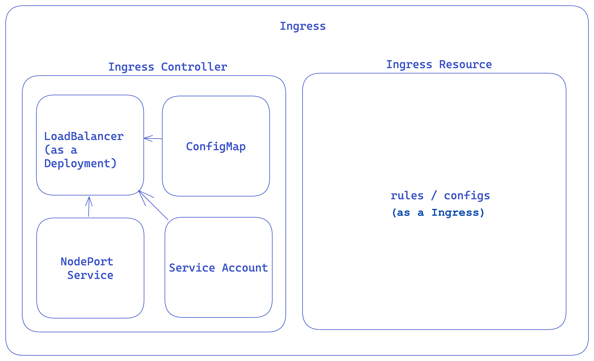
(1) Ingress Controller¶
Ingress控制器由四个资源组成：负载均衡器（以Deployment的形式存在），ConfigMap，NodePort类的服务 和ServiceAccount
- 一个负载均衡器: 以一个单独软件的形式deploy到当前的cluster上。较为流行的有
GCE HTTPS LoadBalancer（谷歌），Nginx，Contour，HaProxy，taefik和Istio。其中GCE HTTPS LoadBalancer（谷歌的）和Nginx由Kubernetes管理。
我们这里以Nginx为例：命名该Deployment为nginx-ingree-controller
apiVersion: apps/v1
kind: Deployment
metadata:
name: nginx-ingree-controller
spec:
replicas: 1
selector:
matchLabels:
name: nginx-ingress
template:
metadata:
labels:
name: nginx-ingress
spec:
containers:
- name: nginx-ingress-controller
image: quay.io/kubernetes-ingress-controller/nginx-ingress-controller:0.21.0
args:
- /nginx-ingress-controller # nginx程序存储在该文件夹下，所以要在运行时进入文件夹
- --configmap=${POD_NAMESPACE}/nginx-configuration # 使用CM存nginx设置，而不是直接写在当前的Deployment里面
env:
- name: POD_NAME
valueFrom:
fieldRef:
fieldPath: metadata.name
- name: POD_NAMESPACE
valueFrom:
fieldRef:
fieldPath: metadata.namespace
ports:
- name: http
containerPort: 80
- name: https
containerPort: 443
Note
所使用的镜像是一个专门用来做Ingress的nginx镜像，可以在这里找到。
-
一个ConfigMap：这里命名为
nginx-configuration，该ConfigMap被1中的Deployment使用，用来存储和修改nginx配置，比如存储日志的路径，SSL 设置，最长等待时间等。apiVersion: v1 kind: ConfigMap metadata: name: nginx-configuration ... -
一个NodePort类型的Service：使Deployment
nginx-ingree-controller可供外部访问apiVersion: v1 kind: Service metadata: name: nginx-ingress-service spec: type: NodePort ports: - port: 80 targetPort: 80 protocol: TCP name: http - port: 443 targetPort: 443 protocol: TCP name: https selectors: # 对应Deployment的Label name: nginx-ingress -
一个ServiceAccount：
nginxIngress还提供了额外的功能，比如监控从集群外部来的访问，并实时修改nginx配置。该操作需要正确的权限，所以我们需要一个ServiceAccount，并在Deployment中使用该SAapiVersion: v1 kind: ServiceAccount metadata: name: nginx-ingress-serviceaccount # Roles, ClusterRoles, RoleBindings...
(2) Ingress Resource¶
Ingress Resource是应用于Ingress Controller的一组规则和配置。比如：
- 对
www.my-shop.com/shopping的访问流入到Shopping App应用中，而对www.my-shop.com/game的访问流入到Game App应用中 - 或者直接从domain就开始区分，比如常见的地域区分：
www.apple.cn和www.apple.de
我们用yaml文件定义一个Ingress Resource。比如，下面这个最简单的例子，会将所有访问都导入到名为shopping-service的Service中去
# ingress_resource.yaml
apiVersion: networking.k8s.io/v1
kind: Ingress # 注意是Ingress类型
metadata:
name: ingress-rule
spec:
backend:
serviceName: shopping-service
servicePort: 80
生成Ingress Resource：
kubectl create -f ingress_rule.yaml
kubectl get ingress
Ingress的默认backend¶
k describe ingress/ingress-rule 可以看到一个Default backend。这个名为default-http-backend的服务是当用户输入的DNS地址（即网址）和规则中任意一条都不相符的时候会被访问！所以可以手动建一个这个名字的服务，然后访问一个自定义的，更加友好的404页面
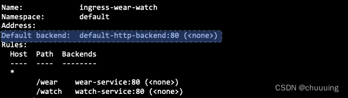
这时查看Yaml文件，该ingress大概长这样：
apiVersion: networking.k8s.io/v1
kind: Ingress
metadata:
name: ingress-resource-backend
spec:
defaultBackend: # 默认服务
resource:
apiGroup: k8s.example.com
kind: StorageBucket
name: static-assets
rules: # 规则
...
rewrite-target¶
Assume we have the ingress url "www.homepage.com/cv" with annotation
annotations:
# thing we use to replace the original subdirectory in the url!
nginx.ingress.kubernetes.io/rewrite-target: /
适用场景
当某个Ingress提供对多个应用的访问，比如：
- `/frontend` -> `frontend-service` -> `frontend-react-app`
- `/dashboard` -> `dashboard-service` -> `dashboard-power-bi-app`
而`frontend-react-app`软件本身提供的页面是没有子域名的，也就是说，如果我在本地跑react软件，能访问到的页面是`localhost:3000`而不是`localhost:3000/frontend`，所以需要“rewrite”
Ingress规则例子 1：网址子路径¶
假设我们想要实现一个分流，所有访问www.my-shop.com/shopping都将访问导入到名为shopping-service的Service，当个用户访问www.my-shop.com/game时，访问另一个名为game-service的Service。我们可以在Ingress Resource的yaml文件中写规则（rule），举例：
# my_ingress_with_path.yaml
apiVersion: networking.k8s.io/v1
kind: Ingress
metadata:
name: ingress-rule
spec:
rules:
# 这里未指定 host，因此该规则适用于通过指定 IP 地址的所有入站 HTTP 通信
- http:
paths:
- path: /shopping
pathType: Prefix
backend:
service:
name: shopping-service
port:
number: 80
- path: /game
pathType: Prefix
backend:
service:
name: game-service
port:
number: 80
k命令直接生成Ingress：
kubectl create ingress ingress-rule \
--rule="www.my-shop.com/shopping*=shopping-service:80" \
--rule="www.my-shop.com/game*=game-service:80"
apiVersion: networking.k8s.io/v1
kind: Ingress
metadata:
name: ingress-rule
namespace: default
spec:
rules:
- host: www.my-shop.com
http:
paths:
- backend:
service:
name: shopping-service
port:
number: 80
path: /shopping
pathType: Prefix
- backend:
service:
name: game-service
port:
number: 80
path: /game
pathType: Prefix
Ingress规则例子 2：域名¶
# my_ingress_with_host.yaml
apiVersion: networking.k8s.io/v1
kind: Ingress
metadata:
name: ingress-rule
spec:
rules:
- host: www.my-shop.cn
http:
paths:
backend:
serviceName: my-shop-cn
servicePort: 80
- host: www.my-shop.de
http:
paths:
backend:
serviceName: my-shop-de
servicePort: 80
Warning
Ingress默认只访问当前Namespace中的服务，但也可以有例外：
Alternatively there is way to achieve ingress in one namespace and service in another namespace via externalName.Checkout Kubernetes Cross Namespace Ingress Network：
```yaml
kind: Service
apiVersion: v1
metadata:
name: test-service-1
namespace: namespace-a
spec:
type: ExternalName
externalName: test-service-2.namespace-b.svc.cluster.local
ports:
- port: 80
```
Bug & Debug¶
很多时候Ingress出问题是因为它的annotations中缺少了一些东西。我们可以通过查看它所指向的Pod的log，或者ingress controller的log查看具体问题出在哪儿：
# 查看Ingress所指向的某个App 的 log
k logs webapp-wear-658fc8dbb4-4m6gs -n app-space
# 查看Ingress controller 的 log
k logs ingress-nginx-controller-ffc6b494b-b7vms -n ingress-nginx
503 Service Temporarily Unavailable
`pathType: Exact` which should be `pathType: Prefix`
301 too many redirect
missing this:
```yaml
metadata:
annotations:
nginx.ingress.kubernetes.io/ssl-redirect: "false"
```
By default the controller redirects (301) to HTTPS if TLS is enabled for that Ingress. If you want to disable that behavior, you can use the nginx.ingress.kubernetes.io/ssl-redirect: "false" annotation.
And in the lab, we manage the HTTPS from our side, not from the ingress. So, you should add annotation nginx.ingress.kubernetes.io/ssl-redirect: "false"
svc didnt reach the correct one
missing this
```yaml
metadata:
annotations:
nginx.ingress.kubernetes.io/rewrite-target: /
```
3. Network Policies¶
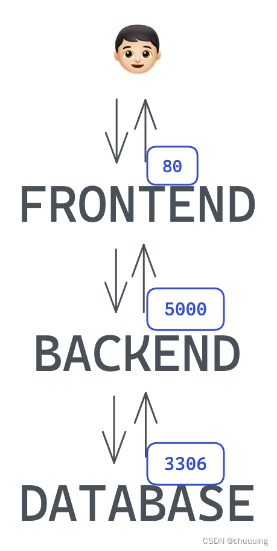
以图为例：用户通过80端口访问前端（Frontend），前端向服务器的5000端口发送请求，服务器则使用数据库的3306端口进行数据提取。Network Policies(netpol)给访问设限，用规则规定哪个Pod可以访问当前的Pod，哪个不可以。而当前的Pod是哪个由netpol的.spec.podSelector.matLabels.name决定
- 概念： ingress和egress都是 相对 的概念，收到的请求叫ingress，发出的叫egress
- 背景： 理论上一个cluster上所有的
Pod之间都能通过Service互相沟通，但如图，我们可能不需要也不想要 Frontend 和 Database 之间直接进行沟通，我们可以通过 Network Policies 对某个Pod的traffic设限 - Network Policies：通过
label和selectors将 Network Policies 连接到Pod上去
Network Policies举例：
# policy-definition.yaml
apiVersion: networking.k8s.io/v1
kind: NetworkPolicy
metadata:
name: db-policy
namespace: prod
spec:
podSelector:
matchLabels:
role: db # 说明此NetPol用在有“role: db”标签的pod上
policyTypes:
- Ingress # 这里写明了规则是限制了Ingress还是Egress还是两者都，这里两个都限制了
- Egress
ingress: # 对ingress的规则：
- from:
- podSelector: # 元素1
matchLabels:
role: api-pod
namespaceSelector: # 可选项目：如果api-pod不在当前的namespace，则需要注明selector
matchlabels:
name: staging
- ipBlock: # 元素2：与元素1之前是“或”的关系
cidr: 192.168.5.12/32
ports:
- protocol: TCP
port: 3306
egress: # 对egress的规则：
- to:
- ipBlock:
cidr: 192.168.5.12/32
ports:
- protocol: TCP
port: 80
Note
- 无论是 ingress 还是 egress的规则，都由两部分组成：
- 1.ingress的from/egress的to规定了通信的来源/目的地；
- 2.
ports规定了使用当前Pod的哪个端口进行通信。
⚠️ 如果只有namespaceSelector，没有podSelector，则表示该规则适用于某namespace上的所有Pod
⚠️ ipBlock：假设规则想要应用到某个不在当前Cluster 上的App，则可使用它
创建Network Policies：
kubectl create -f policy-definition.yaml
from中包含的内容是否作为数组的元素存在很重要！如下：
namespaceSelector并且podSelector |
namespaceSelector或podSelector |
|---|---|
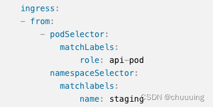 |
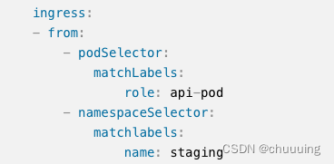 |
4. 标签&选择器（Labels & Selectors）¶
k8s中大量地使用了标签&选择器。比如：Service通过选择器（selector）找到拥有正确标签（labels）的Pod。
selector:
app: myapp
tier: frontend
selector中所有的标签才可以！app==myapp 和 tier=frontend两个标签都要有。下面这个Pod就不满足条件：
kind: Pod
metadata:
name: myPod
labels:
tier: frontend
>>> 本章kubectl命令整理¶
IP
curl ifconfig.me查看外部IPipconfig getifaddr en0查看内部IP
服务（Service）
k get servicek create service nodeport [ServiceName] --tcp=8080:8080k expose deployment/[DeploymentName] \ --name=[ServiceName] \ --port=8080 \ --target-port=8080 \ --type=NodePort
Ingress
k get ingressk describe ingress/ingress-rulek create ingress ingress-rule \ --rule="www.my-shop.com/shopping*=shopping-service:80" --rule="www.my-shop.com/game*=game-service:80"
Network Policies
k get networkpoliciesk get netpol
课后小笔记¶
Service vs ServiceAccount
| Service | ServiceAccount |
|---|---|
| a network service, to expose applications running on Pod | an identity used by Pods to authenticate with Kubernetes API and other cluster services. Each pod has a default ServiceAccount |